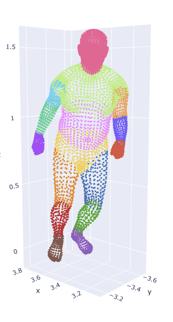
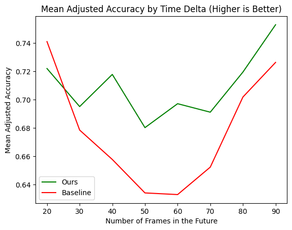
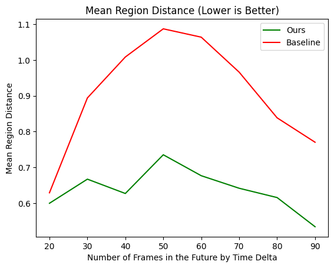

Project Overview
Algorithms for matching points play a crucial role in analyzing geometric and temporal data. In motion capture (MoCap), point correspondences are normally known because markers remain attached to the same body locations across frames. However, in LiDAR-style data or high-density point clouds, this point-to-point correspondence is not available.
Instead of focusing on exact point matches, our work focuses on region-to-region correspondence. Rather than asking whether a point maps to the exact correct point, we evaluate whether it maps to the correct anatomical region of the body.
Our approach leverages optimal transport, a mathematical framework for computing correspondences between probability distributions. By treating point clouds as discrete probability distributions, optimal transport produces a transport plan that maps points between frames while minimizing geometric cost.
We introduce an augmented representation that embeds 3D point clouds into four dimensions using a left-right disambiguation feature. This additional coordinate helps distinguish symmetric body parts such as legs and arms, which are otherwise difficult to differentiate using geometry alone.
Results and Achievements
The proposed 4D embedding method improves correspondence quality between human body point clouds when compared with a baseline optimal transport approach operating only in three dimensions.
- 320 correspondence experiments performed across multiple temporal frame offsets using synthetic point clouds sampled from motion capture meshes.
- Improved region-level correspondence accuracy compared with the baseline 3D optimal transport method, particularly for challenging matches between frames separated by 40–70 timesteps.
- Reduced cross-limb matching errors, especially between symmetric structures such as the left and right legs.
- Consistently lower Average Region Distance of below 0.7, indicating that incorrect matches remain closer to the correct anatomical region compared to the baseline reaching as high as 1.1.
- Developed a complete evaluation pipeline including synthetic point cloud generation, anatomical region labeling, optimal transport matching, and interactive visualization tools.
Stakeholders
This work is relevant to researchers and practitioners working with markerless human motion data, including communities in computer vision, biomechanics, robotics, and animation. These stakeholders often work with LiDAR scans, depth cameras, or dense 3D reconstructions where point identities are not preserved across frames. Improved point correspondence methods can support motion analysis, physical simulation, and data-driven modeling of human movement.
Scope and Boundaries
This project focuses specifically on region-level correspondence between human body point clouds across frames. The method is evaluated on synthetic point clouds generated from motion capture meshes and assumes a single human subject with consistent sampling density.
The project does not attempt full skeleton reconstruction, pose estimation, or real-time tracking. Additionally, the evaluation uses mesh-derived anatomical labels for benchmarking purposes only; these labels are not used by the algorithm itself.
Data
Because real LiDAR-style human datasets are difficult to obtain, we generated synthetic point clouds using motion capture meshes from the ACCAD dataset distributed through the AMASS (Archive of Motion Capture as Surface Shapes) collection.
Mesh files were converted into surface point clouds by sampling points uniformly from the mesh surface. For our experiments we sampled 1000 points per frame.
The source motion capture data runs at approximately 120 frames per second and includes dozens of actions such as walking, running, turning, and other motions. Our experiments focused on walking and running sequences.
Each sampled point inherits the mesh face index it originated from. Using this information we manually defined 16 anatomical body regions. These labels are used only for evaluation and are never seen by the algorithm.

Visualization of the 16 anatomical regions used for evaluation. Points sampled from the mesh inherit the region of the mesh face they were sampled from. These labels are used only for computing evaluation metrics and are never used by the matching algorithm itself.
Because different frames may contain different numbers of sampled points within each region, these labels allow us to compute evaluation metrics that measure both the number of correct matches and how far incorrect matches deviate from their correct region.
Methods
- Point Cloud Sampling: Generate surface samples from motion capture meshes.
- Foot Detection: Identify the bottom 10% of points to isolate the feet.
- K-Means Clustering: Cluster foot points into left and right groups.
- Graph Construction: Build a nearest-neighbor graph to approximate body geometry.
- 4D Embedding: Compute a left-right coordinate from distances to anchor points.
- Optimal Transport Matching: Perform one-to-one matching between frames.
A major challenge in point cloud matching is distinguishing symmetric body parts. When using optimal transport directly on 3D coordinates, points from one leg may incorrectly match to the other leg.
To address this issue we introduce a 4D embedding. First we identify the bottom 10% of points by vertical coordinate, which typically isolates the two feet. These points are projected onto the ground plane and clustered using K-means (k=2) to identify left and right foot centers.
These cluster centers serve as anchor points. For every other point we compute graph-based distances to each anchor point. The difference between these distances defines a scalar value representing the point's relative position between the left and right sides of the body.
This value becomes the fourth coordinate in our embedding. After embedding the data into four dimensions, we compute an optimal transport matching between frames using a one-to-one mapping.
Evaluation Metrics
To evaluate the quality of point correspondences produced by our algorithm, we use two complementary metrics based on anatomical body regions. Each sampled point inherits the face index of the mesh it was sampled from, allowing us to assign it to one of 16 predefined body regions. These labels are used only for evaluation and are never used by the algorithm itself.
Adjusted Accuracy
Adjusted Accuracy measures whether matched points belong to the same anatomical region. For each matched pair, we check whether the source and destination points lie in the same body region.
Because different frames may contain different numbers of sampled points per region, a perfect matching is not always possible. We therefore normalize by the maximum number of correct matches that could exist between the two frames.
This produces a score between 0 and 1, where higher values indicate more region-consistent correspondences.
Average Region Distance
Average Region Distance measures how far incorrect matches are from the correct anatomical region. Body regions are connected through a predefined graph representing the structure of the human body.
Each incorrect match is assigned a distance equal to the number of steps between regions in this graph.
See example of region distance calculation

For example, the distance between the hand and forearm is 1 because there is only one region separating them in the anatomical graph.
In contrast, the distance between the hand and the head is 4, since the path must pass through several intermediate body regions.
Lower values indicate better performance, since incorrect matches remain closer to the correct body region rather than mapping to distant parts of the body.
Together, these metrics capture both the number of correct correspondences and the severity of incorrect matches, providing a more nuanced evaluation of matching quality.
Results
We compared our augmented method against a baseline that performs optimal transport directly on the original 3D coordinates.
Experiments were conducted by sampling 20 frames from the dataset and matching each frame with frames 20, 30, 40, up to 90 frames into the future. This produced 160 baseline matchings and 160 augmented matchings.
Matching Diagrams
To illustrate the qualitative difference between the baseline and our proposed method, we provide two interactive visualizations below. Each visualization shows the correspondences produced by optimal transport between two frames of a motion capture sequence.
The first visualization shows the baseline model, which performs optimal transport matching directly on the original three-dimensional point coordinates. Because the human body contains many symmetric structures, this approach often struggles to distinguish between the left and right sides of the body. In particular, points on one leg may incorrectly map to points on the opposite leg.
In the baseline visualization above, this issue is particularly visible in the lower body. Points from one shin or thigh frequently map to the opposite leg because the geometry of the legs is very similar.
The visualization below shows the results of our augmented method, where each point is embedded into four dimensions. The additional coordinate encodes a left-right value computed from distances to automatically detected foot anchor points. This extra dimension allows the optimal transport algorithm to distinguish between the two sides of the body.
As a result, the correspondences in the leg region become much more consistent. Points on the left leg tend to map to the left leg in the next frame, and similarly for the right leg, significantly reducing cross-leg matches that occur in the baseline model.
While the interactive visualizations above highlight qualitative differences between the baseline and augmented approaches, we also evaluate the methods quantitatively. The following plots summarize performance across multiple frame offsets using the two evaluation metrics described earlier: Adjusted Accuracy and Average Region Distance.
Each line represents the average performance over many matching experiments between frames separated by increasing temporal distance. As the separation between frames grows, the matching problem becomes more difficult because the body pose changes more significantly.
The first plot shows Adjusted Accuracy, which measures the fraction of correspondences assigned to the correct anatomical region. The second plot shows Average Region Distance, which measures how far incorrect matches deviate from the correct region in the body-region graph.
Consistent with the qualitative results above, the augmented 4D embedding improves correspondence quality, particularly when frames are farther apart. The improvement is most noticeable in the 40–70 frame range, where the baseline method often confuses the left and right legs while the augmented method maintains more stable region-level matches.


Quantitative evaluation of correspondence quality across frame offsets. Left: Adjusted Accuracy, measuring the fraction of matches assigned to the correct anatomical region. Right: Average Region Distance, measuring how far incorrect matches are from the correct region in the anatomical graph. Lower values indicate better performance. The augmented 4D embedding consistently outperforms the baseline when matching frames that are farther apart.
Performance improves again around 80 frames due to the cyclical nature of walking and running motions, where body poses become similar again over time.
Conclusion
We demonstrated that incorporating a left-right disambiguation feature improves optimal transport matching between human body point clouds. By embedding points into four dimensions using distances to automatically detected anchor points, we significantly reduce incorrect matches between symmetric body regions.
While the approach improves matching accuracy for the lower body, the arms remain challenging due to their large variability in pose and their proximity to the torso in certain movements.
Future work may explore improved graph-based representations or geodesic distance metrics that better capture body geometry and allow continuous distance measurements between regions.
📂 How to Reproduce Experiments from Repository
1. File Structure
Place AMASS .npz files in datasets/action_smplx_models/ and
the base SMPL-X model in datasets/base_smplx_model/smplx/.
The required file is male2_Calibration_stageii.npz.
2. Environment Setup
Create a Conda environment and install dependencies:
conda create -n amass-env python=3.12 -y
conda activate amass-env
pip install -r requirements.txt
3. Running Experiments
The main file is experiments.py. The key experiment is
left_right_augmentation, which compares baseline 3D optimal
transport to our 4D augmented method.
Parameters:
num_poses: number of initial point clouds sampledtimedeltas: list of future frames to match against
4. Visualization
Plots for the poster and report can be generated with figures.py.
5. Notes
- Experiments can be slow; reduce
num_posesortimedeltasto test quickly. - Several other experiments are included but not used in the final report.
- Ensure the base SMPL-X model and AMASS calibration files are correctly placed.
Team
This project was completed as part of the UC San Diego Data Science Capstone program and focuses on geometric learning and motion analysis.
Quy-Dzu Do – Graph construction methods and optimal transport experiments
Matt Tokunaga – Data preparation, visualization, and disambiguation experiments
Faculty Advisors: Alex Cloninger, Rayan Saab
Contact
For questions, collaboration inquiries, or access to code and datasets:
Email: qndo@ucsd.edu
Location: UC San Diego, La Jolla, California